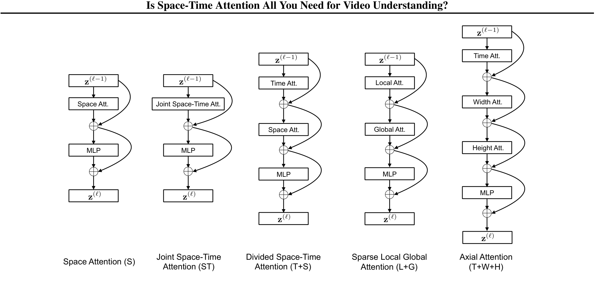

视频多模态大模型¶
📄 涉及论文链接： - ViViT: A Video Vision Transformer (2021) - Is Space-Time Attention All You Need? (2021) - VideoMAE: Masked Autoencoders are Data-Efficient Learners (2022) - Video-LLaVA: Learning United Visual Representation by Alignment Before Projection (2023) - Qwen2-VL: Enhancing Vision-Language Model's Perception of the World at Any Resolution (2024) - LLaVA-OneVision: Easy Visual Task Transfer (2024) - InternVL 2.5 (2024) - Qwen2.5-VL (2025) - CogVideoX (2024) - Qwen2.5-Omni (2025)
目录¶
- 核心要点
- 视频多模态 vs 图文多模态：核心技术差异
- 第一部分：视频基础表征
- 1. ViViT
- 2. TimeSformer
- 3. VideoMAE
- 第二部分：视频大语言模型
- 4. Video-LLaVA
- 5. Qwen2-VL
- 6. LLaVA-OneVision
- 7. InternVL 2.5
- 8. Qwen2.5-VL
- 第三部分：视频生成
- 9. CogVideoX
- 技术路线对比与总结
核心要点¶
- 视频 vs 图像的核心差异：视频多了时间维度，需要建模时序关系（动作、因果、事件顺序），但相邻帧高度冗余（90%信息重复），token数量爆炸（1分钟30fps = 1800帧）；位置编码也要从 2D（高×宽）扩展到 3D（时间×高×宽），ViViT 通过沿时间维度重复图像 ViT 的位置编码来初始化
- 视频表征的三条技术路线：① Tubelet embedding（3D patch）+ 四种时空注意力分解（Spatio-temporal / Factorised encoder / Factorised self-attention / Factorised dot-product）→ ViViT；② 时空分离注意力 → TimeSformer；③ 掩码自编码器 + tube masking → VideoMAE
- 视频 LLM 的演进脉络：统一图文视频（Video-LLaVA）→ Multimodal RoPE 首次提出（Qwen2-VL）→ Higher AnyRes + 图像到视频任务迁移（LLaVA-OneVision）→ Pixel Unshuffle 压缩（InternVL 2.5）→ 绝对时间 MRoPE + 动态 FPS（Qwen2.5-VL）
- MRoPE 的关键思想：将 1D RoPE 分解为时间、高度、宽度三个分量，对图像时间 ID 不变、对视频每帧递增，Qwen2.5-VL 进一步改为绝对时间戳（毫秒级）
- 视频生成的范式：3D VAE + DiT + 3D RoPE（CogVideoX），3D Causal VAE 压缩比 8×8×4，Expert AdaLN 分别处理模态
- 全模态感知：Thinker-Talker 双模块架构 + TMRoPE 时间对齐（Qwen2.5-Omni），统一处理文本、图像、音频、视频
视频多模态 vs 图文多模态：核心技术差异¶
| 挑战 | 图文模型 | 视频模型 |
|---|---|---|
| 序列长度 | 1 张图 → 几百个 token | 1 分钟视频 30fps → 1800 帧 → 数十万 token |
| 时序关系 | 无需建模 | 动作、因果、事件顺序都依赖时间 |
| 冗余度 | 无 | 相邻帧高度相似，90% 的信息是冗余的 |
| 位置编码 | 2D RoPE（高度、宽度） | 3D RoPE（时间、高度、宽度）或 TMRoPE（时间对齐） |
| 视觉编码器 | ViT（2D patch） | 3D ViT / 3D patch / 帧级 2D patch + 时序注意力 |
第一部分：视频基础表征¶
视频理解的第一步是如何从视频中提取有效的时空特征。这一阶段的核心挑战是：如何在保持时序信息的同时，高效处理长序列。
1. ViViT - 视频 Vision Transformer (2021)¶
📄 论文：ViViT: A Video Vision Transformer
作者：Anurag Arnab, Mostafa Dehghani, Georg Heigold, Chen Sun, Mario Lucic, Cordelia Schmid (Google Research)
发表：ICCV 2021
核心思想：将 ViT 直接扩展到视频，用纯 Transformer 架构（无卷积）处理视频分类任务。
1.1 背景与动机¶
2020 年 ViT 在图像分类上取得成功后，自然的问题是：能否用纯 Transformer 处理视频？
挑战在于： - 视频产生的 token 序列非常长（空间 × 时间），全自注意力计算复杂度是二次方 - Transformer 通常需要大数据集，但视频数据集相对较小 - 需要设计高效的时空注意力机制
1.2 核心方法：Tubelet Embedding¶
关键创新：将 ViT 的 2D patch embedding 扩展为 3D tubelet embedding。
Tubelet 的定义： - 从视频体积中提取不重叠的时空管（tube），大小为 \(t \times h \times w\) - 数学上等价于 3D 卷积：卷积核大小 = 步长 = \((t, h, w)\) - Token 数量：\(n_t = T/t\), \(n_h = H/h\), \(n_w = W/w\)，总 token 数 = \(n_t \times n_h \times n_w\)
与 2D patch 的对比：
| 维度 | ViT（图像） | ViViT（视频） |
|---|---|---|
| Patch 形状 | \(h \times w\)（2D） | \(t \times h \times w\)（3D） |
| Embedding | 2D 卷积 | 3D 卷积 |
| 时序信息 | 无 | 在 tokenization 阶段融合 |
为什么这样设计：如果直接用 ViT 处理视频（每帧独立切 patch），序列长度会爆炸。假设 16×16 patches，10 秒视频 × 2 fps = 20 帧，总 tokens = 20 × 256 = 5120 tokens。通过 3D 卷积压缩时间维度，每 2 帧合并为 1 个 tube，总 tokens 减半为 2560，同时保留了时序信息。
1.3 四种模型变体¶
视频 token 序列很长，如果让所有 token 互相做 attention，计算量会爆炸。ViViT 提出了四种变体，核心区别是在 Transformer 的哪个层级、以何种方式对空间和时间维度做分解。
 Figure 1: ViViT 的四种模型变体。从左到右依次是：Spatio-temporal attention、Factorised encoder、Factorised self-attention、Factorised dot-product attention，分别对应不同的时空注意力分解策略。
Figure 1: ViViT 的四种模型变体。从左到右依次是：Spatio-temporal attention、Factorised encoder、Factorised self-attention、Factorised dot-product attention，分别对应不同的时空注意力分解策略。
Model 1：Spatio-temporal attention（时空联合注意力）¶
做法：把视频里所有帧的所有 patch token 全部拉平成一个长序列，然后送进标准 Transformer encoder。每个 token 既能看到同一帧里的其他 patch，也能看到其他帧的 patch。
特点： - 最直观，相当于把视频当成一张“超宽图像”来处理。 - 每一层都能同时建模空间关系和时间关系，长距离依赖能力强。 - 缺点是 token 数量随帧数线性增长，而 attention 计算量随 token 数平方增长，帧数一多就受不了。
Model 2：Factorised encoder（分解编码器）¶
做法：用两个独立的 Transformer encoder 串起来。 1. Spatial encoder：只处理同一时刻（同一帧）内的 patch token，学习单帧画面内容。经过若干层后，把整帧压缩成一个帧级向量。 2. Temporal encoder：把所有帧的帧级向量按时间顺序拼起来，再处理时间关系，最后分类。
如何把一帧压缩成一个向量： - 如果输入里加了 ViT 那种 CLS token，就取 CLS token 最终输出的向量作为整帧表示。 - 如果没有 CLS token，则对 spatial encoder 输出的所有 patch token 做全局平均池化，得到一个向量代表整帧。
特点： - 空间和时间是“晚期融合”：先各自处理，最后才合在一起。 - 很像传统视频 CNN 的做法：先用 2D CNN 抽每帧特征，再聚合时序。 - Spatial encoder 可以直接用预训练的图像 ViT 初始化。 - 总层数比 Model 1 多，参数更多，但计算量反而更小。
Model 3：Factorised self-attention（分解自注意力）¶
做法：Transformer 层数和 Model 1 一样多，但每一层里的 self-attention 被拆成两步： 1. Spatial self-attention：每个 token 只看同一帧里的其他 token，学习“这一帧里有什么”。 2. Temporal self-attention：每个 token 只看不同帧里同一空间位置的 token，学习“这个位置随时间怎么变化”。
特点： - 每一层都能同时接触空间和时间信息，不是像 Model 2 那样等到最后才融合。 - 通过 reshape token 维度来实现空间 attention 和时间 attention 的切换。 - 因为每层多了一次 attention 计算，参数量比 Model 1 大。 - 为了避免 reshape 时 CLS token 位置不好处理，这个模型不使用 CLS token。 - 这种思想和 TimeSformer 的 "Divided Space-Time" 是类似的。
Model 4：Factorised dot-product attention（分解点积注意力）¶
做法：层数和参数量都跟 Model 1 一样，但把 multi-head attention 里的 heads 分成两组： - 一半 heads 只在空间维度上算注意力（同一帧内不同位置之间）。 - 另一半 heads 只在时间维度上算注意力（同一空间位置跨帧之间）。 - 最后把两组 heads 的输出拼起来，过一个线性投影。
具体怎么限制 attention 范围： 以“第 3 帧左上角”这个 token 为例： - 空间头的 key/value 只从第 3 帧里挑（同一帧内所有位置）。 - 时间头的 key/value 只从“左上角这个位置”跨所有帧挑。
特点： - 计算量是四种变体里最小的，因为没有增加任何 layer。 - 参数量和 Model 1 相同，因为只是改 attention 的“视野范围”，没改网络结构。 - 每个 head 只能专门看空间或专门看时间，表达能力比 Model 1 弱一些。
四种变体对比¶
| 变体 | 核心思想 | 层数/结构与 Model 1 的关系 | 计算量 | 参数量 | 时空融合位置 |
|---|---|---|---|---|---|
| Model 1 Spatio-temporal attention | 所有 token 一起看 | 相同结构 | 最大 | 与 ViT 相同 | 每层、每个 token |
| Model 2 Factorised encoder | 两个 encoder 串着用 | 两个独立 encoder | 较小 | 更多 | 两个 encoder 之间（late fusion） |
| Model 3 Factorised self-attention | 每层内先空间后时间 attention | 相同层数，每层多一个 MSA block | 较小 | 更多 | 每层内部 |
| Model 4 Factorised dot-product attention | 不同 heads 分别看空间和时间 | 相同层数和 block 数 | 最小 | 相同 | 每个 multi-head attention 内部 |
工程选择建议： - 如果计算资源充足、追求最大容量，用 Model 1。 - 如果想利用图像预训练权重、精度最好，用 Model 2。 - 如果希望每层都融合时空、精度与效率兼顾，用 Model 3。 - 如果计算资源最少、参数量不能增加，用 Model 4。
1.4 从图像模型初始化¶
关键策略：从预训练的 ViT 图像模型初始化，加速收敛。视频模型比图像模型多了时间维度的 token，因此需要把预训练的 2D 组件合理地扩展到 3D。
位置编码的扩展¶
ViT 的位置编码：只编码空间位置。一张图被切成 \(n_h \times n_w\) 个 patch，所以位置编码的形状是 \((n_h \cdot n_w) \times d\)，对应每个空间位置一个向量。
ViViT 的位置编码：要编码时空位置。视频被切成 \(n_t \times n_h \times n_w\) 个 tubelet token，所以位置编码的形状是 \((n_t \cdot n_h \cdot n_w) \times d\)。
初始化方式：由于视频 token 数量是图像的 \(n_t\) 倍，ViViT 把预训练 ViT 的位置编码沿时间维度重复。也就是说，在初始化时，第 1 帧左上角、第 2 帧左上角、第 3 帧左上角……这些同一空间位置但不同时间帧的 token，都使用相同的位置编码向量。然后在训练过程中再微调。
这个设计的直觉是：同一空间位置在不同帧里，初始时应该“看起来差不多”，让模型从零开始自己学习时间上的变化，而不是一开始就强行给不同帧的同一位置分配完全不同的位置编码。
各组件初始化方法¶
| 组件 | 初始化方法 |
|---|---|
| 位置编码 | 从图像 ViT 的 \((n_h \cdot n_w) \times d\) 位置编码沿时间维度重复到 \((n_t \cdot n_h \cdot n_w) \times d\)，同空间位置跨帧共享初始值 |
| Tubelet embedding | 中心帧初始化（论文采用）：把图像 patch embedding 权重放在 3D 卷积核的时间中心位置，其余时间位置全部置零。初始化时模型只看中心帧，等价于图像 ViT 的行为；训练过程中其他时间位置的权重从零开始学习聚合多帧信息 |
| Model 3 的 temporal MSA | Spatial MSA 从 ViT 初始化，temporal MSA 权重初始化为零 |
补充说明：另一种可选策略是 filter inflation
论文里也提到了另一种把 2D patch embedding 扩展到 3D 的方法：把图像 patch embedding 在时间维度上复制 t 份，然后求平均。这样 3D 卷积核在所有时间位置上都看到相同的图像内容，初始时等价于对多帧做平均。但论文实际采用的是上面的中心帧初始化，因为它更接近预训练图像 ViT 的行为，训练更稳定。
1.5 总结¶
ViViT 的核心贡献： - 首次证明纯 Transformer 可以直接处理视频分类 - Tubelet embedding 是 ViT 2D patch 的 3D 扩展，在 tokenization 阶段融合时空信息 - 四种时空注意力分解策略覆盖不同效率-精度需求：Factorised encoder 精度最好、Factorised dot-product 计算最省、Factorised self-attention 每层都融合时空 - 从图像模型初始化是训练视频 Transformer 的关键策略
2. TimeSformer - 时空分离注意力 (2021)¶
📄 论文：Is Space-Time Attention All You Need for Video Understanding?
作者：Gedas Bertasius, Heng Wang, Lorenzo Torresani (Facebook AI / Dartmouth College)
发表：ICML 2021
核心思想：系统性比较 5 种时空注意力方案，发现 "Divided Space-Time Attention"（先时间后空间） 效果最好且效率最高。
2.1 背景与动机¶
ViViT 提出了 tubelet embedding，但 TimeSformer 提出了一个更根本的问题：是否需要 3D tokenization？
核心假设：也许用 2D patch（每帧独立切分）+ 适当的时空注意力机制就足够了，不需要在 tokenization 阶段融合时序信息。
2.2 核心方法：Divided Space-Time Attention¶

Figure 2: TimeSformer 的五种时空注意力方案。包括 Space-only、Joint Space-Time、Divided Space-Time、Sparse Local Global 和 Axial Attention，其中 Divided Space-Time（T+S）效果最好。输入表示¶
TimeSformer 的一个关键设计是完全不用 3D tokenization： - 把视频看成一帧一帧的 2D 图像。 - 每帧独立切成 \(P \times P\) 的 patch（默认 16×16）。 - 每个 patch 线性映射成一个 token，并加上可学习的时空位置编码。 - 最前面加一个 CLS token，和 BERT/ViT 一样，最终用这个 CLS token 做分类。
五种注意力方案的系统对比¶
论文系统比较了 5 种时空注意力设计：
| 方案 | 核心思想 | 复杂度 | 主要问题 |
|---|---|---|---|
| S (Space-only) | 每帧内部做空间注意力，帧之间没有交互 | 最低 | 完全忽略时序，视频退化成图像 |
| ST (Joint Space-Time) | 所有 token 互相 attention，和 ViViT Model 1 一样 | 最高 | 计算量太大，\((NF+1)^2\) |
| T+S (Divided Space-Time) ⭐ | 先时间注意力，再空间注意力 | 低 | 效果最好 |
| L+G (Sparse Local Global) | 局部邻域 attention + 稀疏全局 attention | 中 | 效果不如 T+S |
| T+W+H (Axial) | 沿时间、宽度、高度三个轴分别 attention | 中 | 参数量大，效果不如 T+S |
Divided Space-Time Attention（T+S）的详细做法¶
在每个 Transformer block 里，self-attention 被拆成两步：
第一步：时间注意力（Temporal Attention）
每个 patch token 只看同一空间位置、不同时间帧的 token，再加上 CLS token。
例如，假设蓝色 query patch 是“第 5 帧左上角”： - 它只会和“第 1 帧左上角、第 2 帧左上角、……、第 F 帧左上角”做 attention。 - 不会和同一帧里其他位置的 patch 做 attention。 - 这样每个 patch 只关注 \(F+1\) 个 key（F 帧 + 1 个 CLS）。
第二步：空间注意力（Spatial Attention）
用第一步的输出作为输入，每个 patch 再看同一帧内的所有 patch token，再加上 CLS token。
还是“第 5 帧左上角”这个 patch： - 它现在会和“第 5 帧里所有位置的 patch”做 attention。 - 不会去看其他帧的 patch。 - 这样每个 patch 只关注 \(N+1\) 个 key（一帧内的 N 个 patch + 1 个 CLS）。
为什么先时间后空间？¶
这是 TimeSformer 和 ViViT Model 3 的关键区别： - ViViT Model 3：先空间注意力，再时间注意力（S+T）。 - TimeSformer T+S：先时间注意力，再空间注意力（T+S）。
论文实验发现 T+S 比 S+T 效果更好，原因可能是： 1. 时间注意力先把同一空间位置在多个帧上的信息联系起来，建立时序上下文。 2. 空间注意力再在“已经带有时序信息”的特征上做空间建模。 3. 对视频理解来说，时序关系往往比单纯空间关系更重要，优先处理时间信息更有利。
计算效率优势¶
假设一帧有 N 个 patch，视频共 F 帧： - Joint Space-Time（ST）：每个 patch 要和 \(N \times F + 1\) 个 token 算 attention，复杂度是 \((NF+1)^2\)。 - Divided T+S：每个 patch 先和 \(F+1\) 个 token 算时间 attention，再和 \(N+1\) 个 token 算空间 attention，总复杂度是 \((N+F+2)\)。
当 N 和 F 都很大时，\(N+F+2\) 远小于 \(NF+1\)，所以 T+S 比 ST 快很多。
实现细节¶
- Pre-LN 架构：TimeSformer 使用 Pre-LayerNorm（LayerNorm 在 attention 之前），比标准 ViT 的 Post-Norm 训练更稳定。
- CLS token：所有方案都保留 CLS token，最终分类用这个 token。
- 位置编码：使用可学习的 3D 时空位置编码，和 ViViT 类似。
2.3 与 ViViT 的对比¶
| 维度 | ViViT | TimeSformer |
|---|---|---|
| Tokenization | Tubelet（3D）或均匀帧采样 | 帧级 2D patch |
| 最佳变体 | Model 3（先空间后时间） | Divided T+S（先时间后空间） |
| 归一化 | Post-Norm（标准 ViT） | Pre-LN（LayerNorm 在注意力之前） |
| CLS token | Model 3 不使用 | 所有变体都使用 |
| 预训练来源 | ImageNet-21K / JFT 上预训练的 ViT | ImageNet-1K / ImageNet-21K 上预训练的 ViT |
| 权重迁移方式 | 需要把 2D patch embedding 和位置编码显式扩展为 3D（中心帧初始化、时间维度重复） | 直接复用 2D ViT 权重，新增的 temporal attention 从头学习 |
| 视频化改造程度 | 较大（需要 3D tokenization 和专门的权重迁移） | 较小（主要靠 attention 机制处理时序） |
2.4 总结¶
TimeSformer 的核心发现： - 不需要 3D tokenization：2D patch + Divided Space-Time Attention 就足够 - 先时间后空间的注意力顺序效果最好 - 分解注意力大幅降低计算复杂度（\(O(N+F)\) vs \(O(NF)\)） - Pre-LN 架构比 Post-Norm 更稳定
3. VideoMAE - 视频掩码自编码器 (2022)¶
📄 论文：VideoMAE: Masked Autoencoders are Data-Efficient Learners for Self-Supervised Video Pre-Training
作者：Zhan Tong, Yibing Song, Jue Wang, Limin Wang (Nanjing University & Tencent AI Lab)
发表：NeurIPS 2022
核心思想：将 MAE 的掩码预训练思路搬到视频上，通过 tube masking（管状掩码）策略 配合 高达 90% 的掩码比例，解决视频时序冗余带来的信息泄露问题，实现数据高效的视频自监督学习。
3.1 背景与动机¶
MAE 在图像上展示了掩码自编码的强大能力，但直接搬到视频上会面临两个问题：
- 掩码比例太低：图像 MAE 用 75% masking，但视频的时序冗余（相邻帧高度相似）使得 75% masking 太容易重建——模型可以从相邻帧 trivially 恢复缺失内容
- 信息泄露：随机 masking 或帧 masking 会导致时序相关，masked 内容在相邻帧重现
关键洞察：视频需要更高的掩码比例和tube masking 策略。
3.2 核心方法：Tube Masking + 90% Masking¶
 Figure 3: VideoMAE 整体框架：通过 tube masking 掩码 90% 的时空 token，仅对可见 token 编码，再用轻量 decoder 重建完整视频。
Figure 3: VideoMAE 整体框架：通过 tube masking 掩码 90% 的时空 token，仅对可见 token 编码，再用轻量 decoder 重建完整视频。
输入处理流程：
输入视频 → 时序下采样 → Cube Embedding → Tube Masking (90%)
↓
仅 unmasked tokens (~10%)
↓
Encoder (ViT)
Joint Space-Time Attention
↓
编码后的特征
↓
Decoder (4 blocks)
+ Masked token embeddings
↓
重建视频
- 时序下采样：对输入视频在时间维度上按固定间隔抽帧，降低时序冗余和后续计算量。
- Cube Embedding：把视频切分成三维小块（cube），每个 cube 同时包含空间和时间信息。例如一个 cube 可以是 2×16×16（时间帧数 × 高 × 宽），每个 cube 通过线性投影变成一个 token。这相当于把图像 ViT 的 2D patch embedding 扩展到 3D。
- Tube Masking (90%)：对 cube token 进行管状掩码，同一空间位置在所有时间步共享同一个 mask 值，最终约 90% 的 token 被遮住，仅约 10% 的可见 token 进入 encoder。
Tube Masking 策略：
- 同一空间位置 \((x, y)\) 在所有时间步共享相同的 mask 值
- Mask 在时间维度上延伸为"tube"（管状）
- 防止信息泄露：如果逐帧独立 mask，masked patch 可以从相邻帧的对应位置 trivially 恢复
90% Masking Ratio：
- 图像 MAE 用 75%，VideoMAE 用 90%-95%
- 为什么这么高：视频的时序冗余使得低比例 masking 太容易，高比例 forcing 模型学习高层语义而非低级像素插值
- 只有 ~10% 的 token 进入 encoder，大幅降低计算成本
非对称 Encoder-Decoder 架构：
- Encoder：只接收约 10% 的 unmasked tokens，使用标准的 ViT 结构，内部采用 joint space-time attention，让 token 之间同时建模空间和时间关系。
- Decoder：轻量级（论文用 4 个 Transformer block），接收 encoder 输出的可见 token 表示，并加入可学习的 masked token embeddings，重建完整视频。
- Masked token embeddings：被 mask 掉的位置没有原始输入，因此每个 mask 位置都使用一个可学习的向量作为占位符。这个向量不是来自视频内容，而是模型参数的一部分，与网络一起训练。Decoder 把可见 token 的编码和这些 mask token 拼接成一个完整序列，再各自加上位置编码，一起送入 Transformer 预测原始像素。
- 重建目标：对每个被 mask 的 cube 内的像素做归一化后计算 MSE loss。
关键设计： - Encoder 只处理 unmasked tokens（~10%），大幅降低计算量 - Decoder 接收 masked tokens + encoder 输出，重建完整视频 - Joint space-time attention：所有 token 对的交互（二次复杂度，但因只处理 10% tokens 而可接受） - MSE loss：重建归一化的 cube 像素（优于 L1 和 Smooth L1）
3.3 数据效率¶
VideoMAE 的核心发现之一是数据质量 > 数据数量：
- 在小型数据集（3k-4k 视频）上无需额外数据就能达到强结果
- 领域匹配的小数据集优于领域偏移的大数据集
- 证明掩码自编码比对比学习更适合视频的数据高效学习
3.4 与 ViViT/TimeSformer 的对比¶
| 维度 | ViViT / TimeSformer | VideoMAE |
|---|---|---|
| 学习范式 | 有监督分类 | 自监督预训练 + 微调 |
| 核心任务 | 视频分类 | 掩码重建（预训练） |
| Masking | 无 | 90% tube masking |
| 数据效率 | 需要大数据集 | 小数据集也有效 |
| 计算效率 | 全 token 处理 | Encoder 只处理 10% tokens |
3.5 总结¶
VideoMAE 的核心贡献： - Tube masking 防止时序信息泄露，是视频 MAE 的关键 - 90% masking ratio 利用视频冗余，forcing 模型学习高层语义 - 非对称 encoder-decoder 大幅降低计算成本 - 数据高效：小数据集 + 自监督预训练就能达到强结果 - 为后续视频 LLM 的视觉编码器提供了预训练范式
第二部分：视频大语言模型¶
视频基础表征解决了"如何从视频中提取特征"，但如何将视频特征与 LLM 对齐，实现视频理解和推理？这是视频 LLM 的核心挑战。
4. Video-LLaVA - 统一图文视频表征 (2023)¶
📄 论文：Video-LLaVA: Learning United Visual Representation by Alignment Before Projection
作者：Bin Lin, Yang Ye, Bin Zhu, Jiaxi Cui, Munang Ning, Peng Jin, Li Yuan (Peking University Shenzhen Graduate School)
发表：arXiv 2023
核心思想：在投影层之前就对齐图像和视频的表征（Alignment Before Projection），用共享的投影层将统一的视觉特征映射到 LLM 输入空间。
4.1 背景与动机¶
大多数 LVLM 要么处理图像，要么处理视频，不能同时处理两者。尝试统一的方法面临问题：
- VideoChat / Video-LLaMA：共享视觉编码器，但图像和视频特征空间本质不同，LLM 难以学习统一表征
- ImageBind-LLM：通过缓存数据库检索间接对齐，导致性能下降，LLM 中没有实际的视频知识
关键洞察：如果图像和视频特征在到达投影层之前就已经对齐，LLM 可以更有效地学习多模态交互。
4.2 核心方法：Alignment Before Projection¶
 Figure 4: Video-LLaVA 的 Alignment Before Projection 架构：图像和视频先分别经过 LanguageBind 编码器，在共享投影层之前完成跨模态对齐。
Figure 4: Video-LLaVA 的 Alignment Before Projection 架构：图像和视频先分别经过 LanguageBind 编码器，在共享投影层之前完成跨模态对齐。
架构：
图像 ──→ LanguageBind 图像编码器 ──┐
├──→ 共享投影层 (2×FC+GeLU) ──→ ┐
视频 ──→ LanguageBind 视频编码器 ──┘ │
↓
文本查询 ──→ Word Embedding 层 ──────────────────────→ Vicuna-7B v1.5 (LLM)
↓
生成响应
关键组件：
- LanguageBind 编码器：
- 从 OpenCLIP-L/14 初始化（自然对齐图像和语言）
- 用 VIDAL-10M 的 3M 视频-文本对扩展到视频
-
通过共享语言空间，图像和视频之间产生涌现对齐
-
共享投影层：
- 2 个全连接层 + GeLU 激活
- 将统一的视觉特征映射到 LLM 输入空间
-
为什么能共享：因为 LanguageBind 已经对齐了图像和视频
-
动态联合训练：
- 每个 batch 随机组合图像和视频样本
- 图像和视频互相增强：视频提升图像理解，反之亦然
训练流程（2 阶段）：
| 阶段 | 数据 | 目标 |
|---|---|---|
| Stage 1（理解预训练） | 558K LAION-CC-SBU 图像 + 702K Valley 视频 | 单轮对话，简洁描述 |
| Stage 2（指令微调） | 665K LLaVA-mixed 图像 + 100K Video-ChatGPT 视频 | 多轮对话，详细推理 |
注意：这个两阶段训练是 Video-LLaVA 在 LanguageBind 预训练权重基础上继续训练的过程，不是 LanguageBind 本身的预训练流程。LanguageBind 已经在 VIDAL-10M 等数据上完成了图像/视频与语言的对齐，Video-LLaVA 直接加载其编码器权重，再训练 LLM 理解视觉输入并生成回答。
图像/视频预处理： - 图像：224×224 resize + crop - 视频：均匀采样 8 帧
4.3 为什么有效？¶
对齐前投影的优势：
- 统一的视觉表征：\(Z_V = f_P(f_V(X_V))\)，其中 \(f_V\) 是 LanguageBind 编码器，\(f_P\) 是共享投影
- 跨模态交互：尽管训练中没有图像-视频配对数据，模型可以推理图像和视频是否描绘同一场景
- 简单但强大：Stage 1 只训练 1 epoch 就在图像和视频基准上同时达到 SOTA
4.4 总结¶
Video-LLaVA 的核心贡献： - Alignment Before Projection：在投影层之前对齐图像和视频，是统一多模态 LLM 的关键 - 共享投影层：简化架构，证明对齐后的特征可以用同一投影处理 - 联合训练：图像和视频互相增强，无需额外配对数据 - 为后续视频 LLM（如 LLaVA-OneVision）提供了统一图文视频的范式
5. Qwen2-VL - Multimodal RoPE 的起源 (2024)¶
📄 论文：Qwen2-VL: Enhancing Vision-Language Model's Perception of the World at Any Resolution
作者：Peng Wang, Shuai Bai, Sinan Tan 等 (Qwen Team, Alibaba Group)
发表：arXiv 2024
核心思想：首次提出 Multimodal RoPE（M-RoPE），将 1D RoPE 分解为时间、高度、宽度三个独立分量，统一建模文本、图像、视频的位置信息。同时引入 Naive Dynamic Resolution，支持任意分辨率输入。
5.1 背景与动机¶
此前的视觉语言模型有两个核心限制：
- 固定分辨率输入：标准 LVLMs 将图像编码为固定分辨率（如 224×224），通过下采样或 scale-then-padding，会损失细节信息
- 位置编码不统一：文本用 1D RoPE，图像用 2D 位置编码，视频缺乏时序位置信息，三种模态的位置编码无法统一在一个框架下
关键洞察：如果用一套统一的位置编码框架处理文本（1D）、图像（2D）、视频（3D），模型可以更自然地学习跨模态的位置关系。
5.2 核心方法：Naive Dynamic Resolution + M-RoPE¶
Naive Dynamic Resolution（动态分辨率支持）：
- 将 ViT 的原始绝对位置编码替换为 2D-RoPE（在 ViT 内部处理图像的 2D 空间位置）
- 不同分辨率的图像被动态转换为不同数量的 visual token
- 通过 MLP 层将相邻 2×2 的 token 压缩为 1 个 token，降低视觉 token 数量
- 推理阶段：不同分辨率的图像被打包成单一序列，通过控制打包长度来限制 GPU 显存
M-RoPE（Multimodal Rotary Position Embedding）：
M-RoPE 将原始旋转位置编码分解为三个独立分量：时间（temporal）、高度（height）、宽度（width）。
不同模态的 ID 分配规则：
| 模态 | 时间 ID \(t\) | 高度 ID \(h\) | 宽度 ID \(w\) |
|---|---|---|---|
| 文本 | 与文本位置相同 | 与文本位置相同 | 与文本位置相同 |
| 图像 | 固定为同一值（图像无时序） | 按 patch 行位置分配 | 按 patch 列位置分配 |
| 视频 | 每帧递增（第 \(i\) 帧 \(t=i\)） | 按 patch 行位置分配 | 按 patch 列位置分配 |
关键效果： - 对文本：三个分量 ID 相同，M-RoPE 退化为标准 1D-RoPE，无额外开销 - 对图像：时间 ID 不变，空间 ID 编码 2D 位置，使模型感知图像的空间结构 - 对视频：时间 ID 随帧递增，空间 ID 跟图像相同，使模型感知时序结构 - 降低位置 ID 的值：图像和视频的 position ID 比文本小，使模型能在推理时外推到更长序列
多模态位置编码的连接：在输入包含多种模态时，每种模态的起始 position ID 从前一模态的最大 ID + 1 开始计数。
 Figure 5: Qwen2-VL 的 M-RoPE 将 1D RoPE 分解为时间、高度、宽度三个独立分量，分别处理文本、图像和视频的位置信息。
Figure 5: Qwen2-VL 的 M-RoPE 将 1D RoPE 分解为时间、高度、宽度三个独立分量，分别处理文本、图像和视频的位置信息。
5.3 架构细节¶
| 组件 | 配置 |
|---|---|
| 视觉编码器 | ViT，约 675M 参数，使用 2D-RoPE |
| 语言模型 | Qwen2 系列（1.5B / 7.6B / 72B） |
| Token 压缩 | MLP 将 2×2 visual token 压缩为 1 个 |
| 上下文长度 | 视频最多 16384 visual tokens |
| 训练 | 图像和视频数据混合训练 |
5.4 总结¶
Qwen2-VL 的核心贡献： - M-RoPE 首次提出：统一的三分量位置编码框架，用同一套机制处理文本（1D）、图像（2D）、视频（3D） - Naive Dynamic Resolution：任意分辨率输入，动态生成不同数量的 visual token - 为 Qwen2.5-VL 奠基：Qwen2.5-VL 在此基础上将时间 ID 改为绝对时间戳，并引入 3D patch 划分
6. LLaVA-OneVision - 图像到视频的任务迁移 (2024)¶
📄 论文：LLaVA-OneVision: Easy Visual Task Transfer
作者：Bo Li, Yuanhan Zhang, Dong Guo, Renrui Zhang 等 (ByteDance, NTU, CUHK, HKUST)
发表：arXiv 2024
核心思想：通过 Higher AnyRes + 双线性插值 处理高分辨率图像，视频用 基础分辨率帧 + 196 tokens/帧 处理，并通过 OneVision 训练阶段 实现从单图能力到多图/视频能力的强迁移。
6.1 背景与动机¶
大多数多模态模型要么优化图像，要么优化视频，难以同时在两者上取得 SOTA。LLaVA-OneVision 的目标是：一个模型同时推进单图、多图、视频三种场景的性能边界。
关键洞察： - 图像的高质量训练数据远多于视频，因此先在图像上训练再迁移到视频是有效的 - 用长序列表示单张图像（模拟视频表征）可以促进图像到视频能力的平滑迁移 - 统一 token 预算：三种场景的最大 visual token 数量设计为相近，避免模态偏差
6.2 核心方法：Higher AnyRes + OneVision 训练¶
架构：
| 组件 | 配置 |
|---|---|
| 视觉编码器 | SigLIP（384×384 → 729 tokens） |
| 连接器 | 2 层 MLP |
| 语言模型 | Qwen-2（0.5B / 7B / 72B） |
Higher AnyRes with Bilinear Interpolation：
AnyRes 是将高分辨率图像划分为多个 crops 的方法。LLaVA-OneVision 引入 Higher AnyRes，核心改进是双线性插值：
其中 \(\tau\) 是 token 阈值，\(a \times b\) 是 crop 配置，\(T\) 是每个 crop 的 token 数。当总 token 超过阈值时，用双线性插值减少每个 crop 的 token 数，从而在保持高分辨率输入的同时控制序列长度。
 Figure 6: LLaVA-OneVision 的 Higher AnyRes 通过双线性插值在保持高分辨率的同时控制 token 数量。
Figure 6: LLaVA-OneVision 的 Higher AnyRes 通过双线性插值在保持高分辨率的同时控制 token 数量。
三种场景的视觉表征策略：
| 场景 | 表征方式 | 最大 tokens | 说明 |
|---|---|---|---|
| 单图 | AnyRes（最多 9 个 crop + 1 个 thumbnail） | \((1+9) \times 729 = 7290\) | 高分辨率，AnyRes 保持原始比例 |
| 多图 | 仅基础分辨率，无 AnyRes | \(12 \times 729 = 8748\) | 节省计算，多图无需高分辨率 |
| 视频 | 每帧 resize 到基础分辨率，196 tokens/帧 | \(32 \times 196 = 6272\) | 双线性插值压缩 to 196 tokens |
视频表征的关键细节： - 每帧 resize 到基础分辨率（而非 AnyRes），得到 feature maps - 用双线性插值将每帧的 729 tokens 压缩到 196 tokens（降低约 73%） - 最多采样 32 帧，总 visual tokens = \(32 \times 196 = 6272\) - 设计原则：与图像的最大 token 数相近，平衡图像与视频的视觉表征
为什么这个 token 策略有效：通过让单图的 token 数与视频相近（单图 7290 vs 视频最大 6272），训练时图像和视频的序列长度相近，模型学到的视觉表征可以跨模态迁移。
 Figure 7: LLaVA-OneVision 在单图、多图、视频三种场景下的统一 token 预算策略。
Figure 7: LLaVA-OneVision 在单图、多图、视频三种场景下的统一 token 预算策略。
6.3 训练流程：四阶段递进¶
| 阶段 | 训练内容 | 可训练模块 |
|---|---|---|
| Stage 1 | 基础视觉-语言对齐，基础分辨率 729 tokens | MLP（投影层） |
| Stage 1.5 | 高分辨率 AnyRes，最多 5 crops | MLP |
| Stage 2（单图） | 320 万单图指令微调 | 全模型 |
| Stage 2（OneVision） | 视频 + 单图 + 多图混合训练 | 全模型 |
OneVision 训练阶段的关键：
OneVision 阶段是最关键的一步——在单图指令微调之后，将视频和多图数据混合进来。论文发现这是让模型在视频任务上产生新涌现能力（emergent capabilities）的最简单且最省成本的方式。核心机制是知识从图像向视频迁移：模型在图像上积累的高质量理解能力，通过统一的 token 表征迁移到视频理解。
6.4 总结¶
LLaVA-OneVision 的核心贡献： - Higher AnyRes + 双线性插值：高分辨率图像的高效 token 压缩 - 统一 token 预算：三种场景最大 token 数相近，促进图像→视频的能力迁移 - OneVision 训练阶段：单图 → 多图/视频能力的平滑迁移 - 视频 196 tokens/帧：压缩表征，最多 32 帧，共 6272 tokens
7. InternVL 2.5 - 像素压缩与动态分辨率 (2024)¶
📄 论文：Expanding Performance Boundaries of Open-Source Multimodal Models with Model, Data, and Test-Time Scaling
作者：Zhe Chen, Weiyun Wang, Yue Cao 等 (Shanghai AI Laboratory 及合作机构)
发表：arXiv 2024
核心思想：用 Pixel Unshuffle 将每个 448×448 tile 的 1024 tokens 压缩为 256 tokens，用 动态分辨率匹配 处理不同宽高比的图像，视频处理则通过 \(n_{\max}=1\) 固定单 tile 每帧，在 8-64 帧范围内实现高效视频理解。
7.1 背景与动机¶
InternVL 系列的演进：InternVL 1.5 引入动态分辨率 → InternVL 2.0 增加多图和视频 → InternVL 2.5 升级语言模型骨干 + 扩展训练数据。
核心挑战：每个 tile 经过 ViT 会产生 1024 个 visual tokens，高分辨率图像（如 2000×3000）会有很多 tile，总 token 数爆炸。
解决方案：在 ViT 输出之后，用 Pixel Unshuffle 操作将 1024 tokens 压缩为 256 tokens（4×压缩）。
7.2 核心方法：Pixel Unshuffle + 动态分辨率¶
整体架构（ViT-MLP-LLM 范式）：
输入图像/视频帧
↓ 动态分辨率匹配（预定义宽高比 + 448×448 tile）
↓ InternViT-6B（每个 tile → 1024 tokens）
↓ Pixel Unshuffle（1024 → 256 tokens，4× 压缩）
↓ MLP Projector
↓ LLM（InternLM2.5 或 Qwen2.5）
 Figure 8: InternVL 2.5 的 ViT-MLP-LLM 整体架构，通过 Pixel Unshuffle 实现 4× token 压缩。
Figure 8: InternVL 2.5 的 ViT-MLP-LLM 整体架构，通过 Pixel Unshuffle 实现 4× token 压缩。
Pixel Unshuffle 操作：将 \(H \times W \times C\) 的 feature map 重排为 \(\frac{H}{r} \times \frac{W}{r} \times (C \cdot r^2)\)（下采样因子 \(r=2\)），然后用线性层投影回合适维度。效果：spatial 维度减少为原来的 1/4，tokens 从 \(32 \times 32 = 1024\) 压缩到 \(16 \times 16 = 256\)。
动态高分辨率处理：
- 宽高比匹配：预定义多种宽高比（1:1, 1:2, 2:1, 1:3, 3:1, ...），给定输入图像 \(W \times H\)，计算宽高比 \(r = W/H\)，选择最接近的预定义宽高比，将图像 resize 成 tile 数最少且失真最小的配置
- Tile 数限制：tile 总数 \(n_{\text{tiles}}\) 受 \(n_{\max}\) 约束
不同数据类型的 \(n_{\max}\) 配置：
| 数据类型 | \(n_{\max}\) | 含义 |
|---|---|---|
| 单图 | 6~36（较大值） | 分配给单张图像的全部 tiles，保最高分辨率 |
| 多图 | 12~36（按图像数量分配） | 总 tiles 按比例分配给每张图像 |
| 视频 | 1（固定） | 每帧只用 1 个 tile，resize 到 448×448 |
| 文本 | null | 无视觉输入 |
 Figure 9: InternVL 2.5 对不同数据类型（单图、多图、视频、纯文本）的输入格式与 tile 分配策略。
Figure 9: InternVL 2.5 对不同数据类型（单图、多图、视频、纯文本）的输入格式与 tile 分配策略。
视频处理的关键设计：
视频帧设置 \(n_{\max}=1\)，每帧 resize 到固定 448×448，再经过 Pixel Unshuffle 压缩到 256 tokens/帧：
- 帧数范围：训练时采样 8~32 帧，支持最多 64 帧的视频
- token 总量：若采样 32 帧，总 visual tokens = \(32 \times 256 = 8192\)
- 设计原则：视频强调时序理解而非单帧高分辨率，固定单 tile 的设计在保持足够空间信息的同时大幅降低序列长度
- 不做数据增强：视频数据关闭 JPEG 压缩增强（图像数据则开启）
7.3 InternVL 系列演进对比¶
| 版本 | 视觉编码器 | Token 压缩 | 视频支持 | 语言模型 |
|---|---|---|---|---|
| InternVL 1.5 | InternViT-6B | Pixel Unshuffle | 无 | InternLM2 |
| InternVL 2.0 | InternViT-6B | Pixel Unshuffle | 有（引入） | InternLM2 |
| InternVL 2.5 | InternViT-6B | Pixel Unshuffle | 有（8-64帧） | InternLM2.5 / Qwen2.5 |
 Figure 10: InternVL 2.5 的训练数据配置与 scaling 策略。
Figure 10: InternVL 2.5 的训练数据配置与 scaling 策略。
7.4 总结¶
InternVL 2.5 视频处理的核心设计： - Pixel Unshuffle：每个 tile 1024 → 256 tokens，4× 压缩，降低序列长度 - \(n_{\max}=1\) 视频策略：每帧固定 448×448，256 tokens，简洁高效 - 动态分辨率：单图用多 tile 保高分辨率，视频用单 tile 保帧数 - ViT-MLP-LLM 范式：简洁架构，强大视觉编码器 + MLP 连接器 + 顶尖 LLM
8. Qwen2.5-VL 的视频理解能力 (2025)¶
📄 论文：Qwen2.5-VL Technical Report
作者：Qwen Team, Alibaba Group
发表：arXiv 2025
核心思想：在 Qwen2-VL 的 M-RoPE 基础上，进一步引入 3D patch 划分 + 动态 FPS 采样 + 绝对时间 MRoPE，实现原生分辨率的视频理解和秒级事件定位。
8.1 背景与动机¶
Qwen2-VL（2024.09）已经引入 M-RoPE 和动态分辨率，但视频理解仍存在两个问题：
- 时间 ID 绑定到帧索引：MRoPE 的时间 position ID 表示"第几帧"，不考虑帧率或实际时间，模型无法感知事件发生的实际时间（秒、分钟）
- 固定 FPS 采样：训练时只用固定帧率，模型无法适应不同采样率的视频
关键洞察：视频理解需要理解"时间"而非"帧数"——时间 ID 应该对应实际时间戳，训练时应该见到各种帧率。
8.2 核心方法：3D patch + 动态 FPS + 绝对时间 MRoPE¶
3D patch 划分（视频 tokenization）：
Qwen2.5-VL 的 ViT 使用 3D patch 划分 处理视频：
| 输入类型 | 切分方式 | Patch Embedding | 输出 |
|---|---|---|---|
| 图像 | 2D patches (14×14) | 2D 卷积 | 2D token 网格 |
| 视频 | 3D patches (2×14×14) | 3D 卷积（深度为 2） | 压缩后的时空 token 网格 |
- 图像：ViT 使用标准 2D 卷积，将图像切分为 2D patches（14×14）
- 视频：ViT 使用 3D 卷积，将视频切分为 3D patches（2×14×14，其中 2 是时间维度）
- 效果：每两个连续帧被合并为一个 token，在不增加序列长度的前提下处理更多视频帧
- 为保持一致性：每张图像被视为两个相同的帧，图像和视频共享同一套位置编码机制
动态 FPS 采样：
在训练阶段，对视频数据进行动态 FPS 采样：
- 不是固定采样率（如统一使用 1 FPS 或 2 FPS）
- 而是对每个视频随机选择不同的 FPS
- 目标是让训练数据中各种 FPS 的视频均匀分布
- 这样模型就能适应不同采样率的视频
绝对时间 MRoPE：
Qwen2.5-VL 将 MRoPE 的时间 ID 从帧索引改为绝对时间戳（毫秒级）：
| 维度 | Qwen2-VL | Qwen2.5-VL |
|---|---|---|
| 时间 ID | 帧索引（第 1 帧、第 2 帧...） | 实际时间戳（毫秒级） |
| 学习能力 | 只能看到"第几帧" | 能理解事件发生的实际时间 |
| 跨 FPS 一致性 | 不同帧率的视频时间 ID 不一致 | 一致（都是实际时间） |
数学表达：
其中 \(t_{\text{absolute}}\) 是实际时间戳（毫秒），而非帧索引。
模型通过时间 ID 之间的间隔学习时序动态，实现： - 理解事件节奏/速度 - 精确时刻定位（秒级） - 跨不同 FPS 采样率的时间对齐一致性 - 无额外计算开销
8.3 视频处理的其他关键技术¶
窗口注意力： - ViT 共 32 层，其中仅 4 层使用全注意力（索引 {7, 15, 23, 31}） - 其余 28 层使用窗口注意力（窗口大小 112×112 像素 = 8×8 patches） - 计算复杂度从二次方降至线性，使原生分辨率处理在推理时变得实用
动态分辨率： - 视频帧根据原始尺寸动态调整 token 数量 - 每个视频最多 16384 tokens - 为平衡长视频处理的计算需求与整体训练效率
图像与视频统一处理： - 为保持一致性，每张图像被视为两个相同的帧 - 图像和视频共享同一套位置编码机制
长视频处理： - 对于超过 30 分钟的长视频，专门构建长视频 caption 数据 - 通过多帧 caption 合成流水线生成训练数据
8.4 总结¶
Qwen2.5-VL 在视频理解上的核心贡献： - 3D patch 划分：将 ViViT 的 tubelet 思想应用到视频 LLM，压缩时间维度 - 动态 FPS 采样：将动态分辨率从空间维度扩展到时间维度 - 绝对时间 MRoPE：时间 ID 对应实际时间戳，实现秒级事件定位 - 窗口注意力：计算复杂度从二次方降至线性，支持原生分辨率 - 证明了视频 LLM 可以通过统一的位置编码框架（MRoPE）同时处理图像和视频
第三部分：视频生成¶
视频理解解决了"如何理解视频内容"，但反向问题是：如何从文本生成视频？ 这是视频生成的核心挑战。CogVideoX 代表了当前视频生成的主流范式：3D VAE + DiT + 3D RoPE。
9. CogVideoX - 文本到视频生成 (2024)¶
📄 论文：CogVideoX: Text-to-Video Diffusion Models with An Expert Transformer
作者：Zhuoyi Yang, Jiayan Teng, Wendi Zheng, Ming Ding 等 (Tsinghua University & Zhipu AI)
发表：ICLR 2025
核心思想：用 3D Causal VAE 压缩视频时空信息，用 Expert Transformer + Expert AdaLN 分别处理文本和视频特征，用 3D Full Attention 替代分离的时空注意力。
6.1 背景与动机¶
视频生成的核心挑战：
- 时空压缩：视频是 3D 数据（时间 × 高度 × 宽度），如何高效压缩？
- 模态融合：文本和视频的特征空间本质不同，如何有效融合？
- 长视频生成：固定帧数训练浪费数据（丢弃短视频，截断长视频），模型会分裂为两种生成模式
关键洞察： - 3D VAE 比 2D VAE + 时间插值更适合视频压缩 - 分离的时空注意力无法处理相邻帧之间的大运动（视觉信息只能通过背景 patch 隐式传递） - 混合时长训练需要 Frame Pack 技术统一不同分辨率和时长的视频
6.2 核心方法：3D Causal VAE + Expert Transformer + 3D Full Attention¶
 Figure 11: CogVideoX 的整体架构：3D Causal VAE 压缩视频 + Expert Transformer 融合文本条件 + 3D Full Attention 建模时空关系。
Figure 11: CogVideoX 的整体架构：3D Causal VAE 压缩视频 + Expert Transformer 融合文本条件 + 3D Full Attention 建模时空关系。
3D Causal VAE（视频压缩）：
- 3D 卷积：在时空维度上压缩视频，压缩比 8×8×4（空间 8 倍，时间 4 倍）
- 时序因果卷积（temporally causal convolution）：所有 padding 在卷积空间的前部，确保未来信息不影响现在和过去
- 两阶段训练：先在 17 帧 256×256 上训练，再用 context parallel 在 161 帧上微调
- Context parallel：在时间维度上并行，每个 rank 发送长度为 k-1 的片段给下一个 rank（k = 时间卷积核大小），节省显存
 Figure 12: CogVideoX 的 3D Causal VAE：通过 3D 卷积在时空维度上压缩视频，压缩比为 8×8×4，使用时序因果卷积保证未来信息不泄露。
Figure 12: CogVideoX 的 3D Causal VAE：通过 3D 卷积在时空维度上压缩视频，压缩比为 8×8×4，使用时序因果卷积保证未来信息不泄露。
Expert Transformer（模态融合）：
- Expert AdaLN：分别使用 Vision Expert AdaLN 和 Text Expert AdaLN 处理各自的 hidden state
- 调制输入：扩散时间步 \(t\) 作为调制输入，促进特征空间对齐同时最小化参数
- 为什么需要 Expert AdaLN：文本和视频 embedding 的特征空间本质不同，直接用同一个 LayerNorm 会导致特征空间不匹配
3D Full Attention（时空联合注意力）：
- 将文本和视频序列拼接后做统一的 3D 注意力
- 替代分离的时空注意力：分离注意力无法处理相邻帧之间的大运动
- 优势：避免隐式信息传递的不一致性问题
3D RoPE（位置编码）：
- 每个 latent 有 3D 坐标 \((x, y, t)\)
- 独立对每个维度应用 1D-RoPE，分别占据 hidden state 的 3/8、3/8、2/8 通道
- 沿通道维度拼接
Frame Pack（混合时长训练）：
 Figure 13: CogVideoX 的 Frame Pack 技术：将不同时长和分辨率的视频打包到同一 batch 中，通过 3D-RoPE 外推适应不同时长。
Figure 13: CogVideoX 的 Frame Pack 技术：将不同时长和分辨率的视频打包到同一 batch 中，通过 3D-RoPE 外推适应不同时长。
- 将不同时长和分辨率的视频打包到同一 batch 中，确保形状一致
- 外推而非插值：3D-RoPE 位置编码使用外推适应不同时长
- 优势：不浪费数据（不丢弃短视频，不截断长视频），模型学习统一的生成模式
6.3 训练策略¶
渐进式训练： - 分辨率：256px → 512px → 768px - 时长：短视频 → 长视频
显式均匀采样： - 将时间步范围 \([1, T]\) 分为 \(n\) 个区间（\(n\) = rank 数） - 每个 rank 在自己的区间内采样，确保时间步分布更均匀，损失更稳定
扩散设置： - v-prediction, zero SNR, LDM noise schedule
数据： - ~35M 过滤后的单镜头视频片段（平均 ~6 秒） - 2B 图像来自 LAION-5B / COYO-700M
6.4 总结¶
CogVideoX 的核心贡献： - 3D Causal VAE：时序因果卷积，压缩比 8×8×4，支持长视频训练 - Expert AdaLN：分别处理文本和视频特征，解决特征空间不匹配 - 3D Full Attention：统一的时空联合注意力，替代分离注意力 - Frame Pack：混合时长训练，不浪费数据 - 代表了视频生成的主流范式：3D VAE + DiT + 3D RoPE
技术路线对比与总结¶
视频基础表征的技术路线¶
| 维度 | ViViT (2021) | TimeSformer (2021) | VideoMAE (2022) |
|---|---|---|---|
| 核心思想 | 3D tubelet embedding | 时空分离注意力 | 掩码自编码器 + tube masking |
| Tokenization | 3D patch（tubelet） | 2D patch（帧级） | 3D patch（cube） |
| 注意力机制 | 4 种变体（Model 3 最佳） | 5 种方案（Divided T+S 最佳） | Joint space-time（仅 10% tokens） |
| 学习范式 | 有监督分类 | 有监督分类 | 自监督预训练 + 微调 |
| 数据效率 | 需要大数据集 | 需要大数据集 | 小数据集也有效 |
| 关键创新 | 首个纯 Transformer 视频模型 | 证明 2D patch + 分离注意力足够 | 90% tube masking 防止信息泄露 |
演进脉络： 1. ViViT 证明了纯 Transformer 可以处理视频，提出 3D tubelet 2. TimeSformer 质疑 3D tokenization 的必要性，证明 2D patch + 分离注意力就足够 3. VideoMAE 引入自监督预训练，用 tube masking 解决视频冗余问题，为后续视频 LLM 提供预训练范式
视频 LLM 的技术路线¶
| 维度 | Video-LLaVA (2023) | Qwen2-VL (2024) | LLaVA-OneVision (2024) | InternVL 2.5 (2024) | Qwen2.5-VL (2025) |
|---|---|---|---|---|---|
| 核心思想 | Alignment Before Projection | M-RoPE 首次提出 | Higher AnyRes + 任务迁移 | Pixel Unshuffle 压缩 | 绝对时间 MRoPE |
| 视频 tokenization | 8 帧 + LanguageBind | 帧级 2D patch + 2×2 压缩 | 196 tokens/帧（双线性插值） | 256 tokens/帧（Pixel Unshuffle） | 3D patch（2×14×14） |
| 位置编码 | 标准 RoPE | M-RoPE（帧索引作时间 ID） | AnyRes 空间位置 | 无显式时序 | M-RoPE + 绝对时间戳 |
| 视频帧数 | 8 帧 | 动态 | 最多 32 帧 | 8-64 帧 | 动态 FPS |
| tokens/帧 | ~256 | 动态 | 196 | 256 | 动态 |
| 关键创新 | 共享投影统一图文视频 | M-RoPE 三分量位置编码 | 图像→视频能力迁移 | nmax=1，固定单 tile | 绝对时间戳，秒级事件定位 |
演进脉络： 1. Video-LLaVA 证明了图文视频可以在投影层之前对齐，用共享投影层统一处理 2. Qwen2-VL 首次提出 M-RoPE，统一建模文本/图像/视频的位置信息，动态分辨率支持任意输入 3. LLaVA-OneVision 通过 Higher AnyRes + 统一 token 预算，实现从单图训练到视频理解的强迁移 4. InternVL 2.5 用 Pixel Unshuffle 压缩 token，视频用固定单 tile 策略，简洁高效 5. Qwen2.5-VL 将时间 ID 改为绝对时间戳（毫秒），引入 3D patch 划分，实现秒级事件定位
视频生成的技术路线¶
| 维度 | CogVideoX (2024) |
|---|---|
| 核心思想 | 3D Causal VAE + Expert Transformer + 3D Full Attention |
| 视频压缩 | 3D VAE（8×8×4 压缩比） |
| 模态融合 | Expert AdaLN（分别处理文本和视频） |
| 注意力机制 | 3D Full Attention（统一时空） |
| 位置编码 | 3D RoPE（3/8, 3/8, 2/8 通道分配） |
| 训练策略 | Frame Pack（混合时长训练） |
核心技术对比表¶
| 技术组件 | 视频基础表征 | 视频 LLM | 视频生成 |
|---|---|---|---|
| Tokenization | Tubelet (ViViT) / 2D patch (TimeSformer) / Cube (VideoMAE) | 3D patch (Qwen2.5-VL) / Pixel Unshuffle (InternVL) / 帧级采样 (Video-LLaVA, LLaVA-OneVision) | 3D VAE latent (CogVideoX) |
| 位置编码 | 可学习时空位置编码 | M-RoPE (Qwen2-VL) / 绝对时间 M-RoPE (Qwen2.5-VL) / 标准 RoPE (Video-LLaVA) | 3D RoPE (CogVideoX) |
| 注意力机制 | 分解注意力 (ViViT Model 3, TimeSformer Divided) / Joint (VideoMAE) | 窗口注意力 (Qwen2.5-VL) / 全注意力 (Video-LLaVA) | 3D Full Attention (CogVideoX) |
| 时间建模 | 时序注意力 / tube masking | 绝对时间戳 (Qwen2.5-VL) / 帧索引 (Qwen2-VL) / 无显式建模 (Video-LLaVA, InternVL) | 时序因果卷积 (CogVideoX) |
| 核心挑战 | 长序列计算复杂度 | 时间理解（秒级定位）+ token 压缩 | 时空压缩 + 模态融合 |
关键洞察总结¶
-
视频 vs 图像的核心差异：视频多了时间维度，但相邻帧高度冗余（90% 信息重复），token 数量爆炸。所有视频模型都需要解决"如何高效压缩时间维度"的问题。
-
3D tokenization 是主流：从 ViViT 的 tubelet 到 Qwen2.5-VL 的 3D patch 到 CogVideoX 的 3D VAE，3D 压缩是处理视频的核心技术。
-
分解注意力 vs 联合注意力：ViViT 和 TimeSformer 证明分解注意力（先时间后空间）效率更高，但 CogVideoX 用 3D Full Attention 替代分离注意力，认为联合注意力能更好地处理大运动。
-
自监督预训练是视频表征的关键：VideoMAE 证明 tube masking + 90% masking ratio 可以高效学习视频表征，为后续视频 LLM 提供预训练范式。
-
M-RoPE 的演进：Qwen2-VL 首次提出三分量位置编码（时间、高度、宽度），统一图像和视频的位置建模；Qwen2.5-VL 进一步将时间 ID 改为绝对时间戳，实现秒级事件定位。
-
图像→视频任务迁移：LLaVA-OneVision 证明通过统一 token 预算设计，可以让模型从图像理解能力自然迁移到视频理解，无需从头为视频设计独立架构。
-
Token 压缩的设计哲学：InternVL 2.5 用 Pixel Unshuffle（4×压缩）+ 视频固定单 tile；LLaVA-OneVision 用双线性插值压缩到 196 tokens/帧；Qwen2.5-VL 用 3D patch 在 tokenization 阶段压缩。不同策略各有取舍。
-
视频生成需要 3D VAE + Expert Transformer：CogVideoX 代表主流范式，用 3D Causal VAE 压缩时空，用 Expert AdaLN 分别处理模态，用 Frame Pack 混合时长训练。
学习建议¶
- 基础概念：先理解 ViT 的 patch embedding 和 RoPE，再理解 3D 扩展和 M-RoPE
- 视频基础表征：重点理解 ViViT 的 tubelet、TimeSformer 的 Divided Attention、VideoMAE 的 tube masking
- 视频 LLM 演进：从 Video-LLaVA（对齐基础）→ Qwen2-VL（M-RoPE 原型）→ LLaVA-OneVision（任务迁移）→ InternVL 2.5（token 压缩）→ Qwen2.5-VL（绝对时间）
- 视频生成：重点理解 CogVideoX 的 3D Causal VAE + Expert AdaLN + Frame Pack
- 对比学习：对比 ViViT vs TimeSformer（3D vs 2D tokenization）、Qwen2-VL vs Qwen2.5-VL（帧索引 vs 绝对时间戳）、InternVL vs LLaVA-OneVision（Pixel Unshuffle vs 双线性插值）